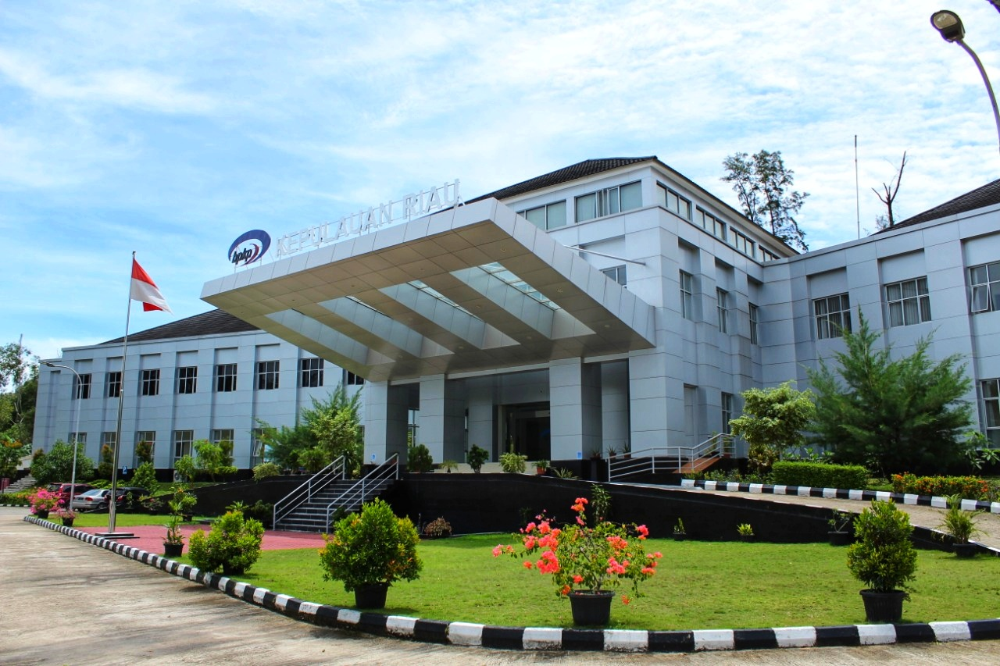

Tentang Kami
Kantor BPKP Provinsi Kepulauan Riau
Apa itu BPKP?
Badan Pengawasan Keuangan dan Pembangunan, atau yang disingkat BPKP, adalah Lembaga pemerintah nonkementerian Indonesia yang melaksanakan tugas pemerintahan di bidang pengawasan keuangan dan pembangunan yang berupa Audit, Konsultasi, Asistensi, Evaluasi, Pemberantasan KKN serta Pendidikan dan Pelatihan Pengawasan sesuai dengan peraturan yang berlaku. Hasil pengawasan keuangan dan pembangunan dilaporkan kepada Presiden selaku kepala pemerintahan sebagai bahan pertimbangan untuk menetapkan kebijakan-kebijakan dalam menjalankan pemerintahan dan memenuhi kewajiban akuntabilitasnya. Hasil pengawasan BPKP juga diperlukan oleh para penyelenggara pemerintahan lainnya termasuk pemerintah provinsi dan kabupaten/kota dalam pencapaian dan peningkatan kinerja instansi yang dipimpinnya.